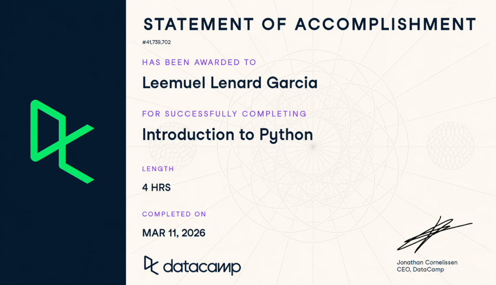
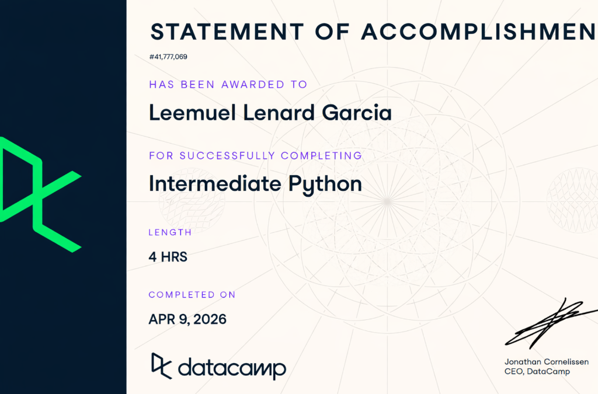
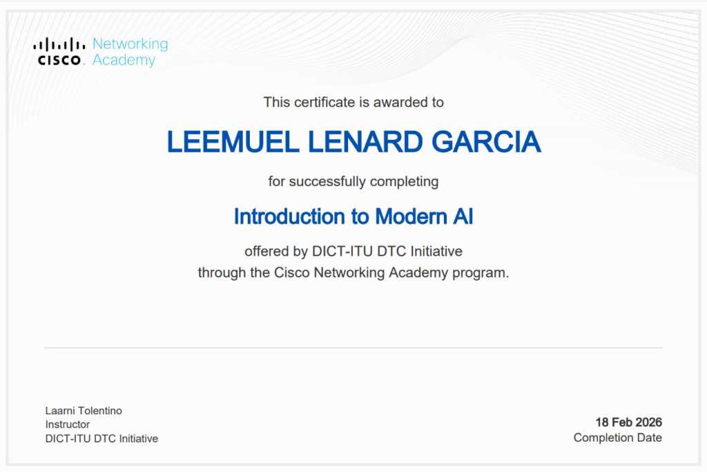
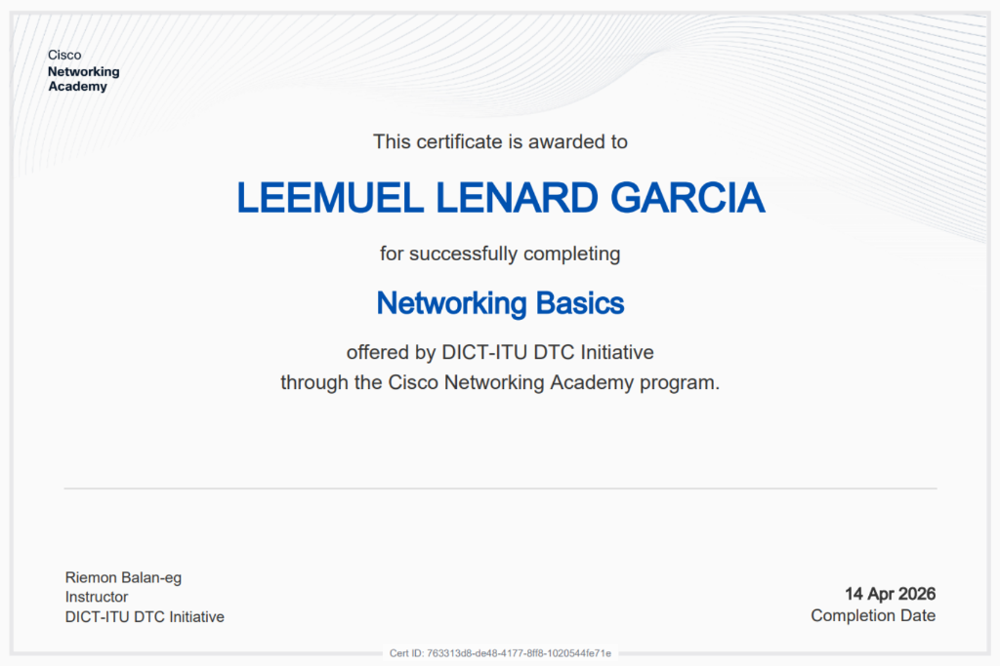
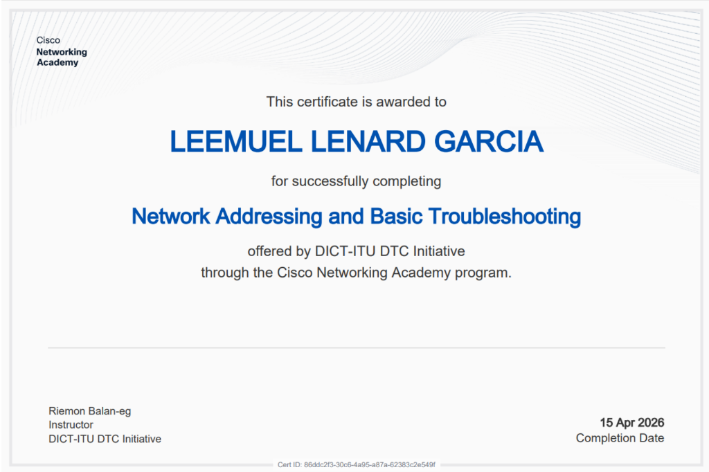
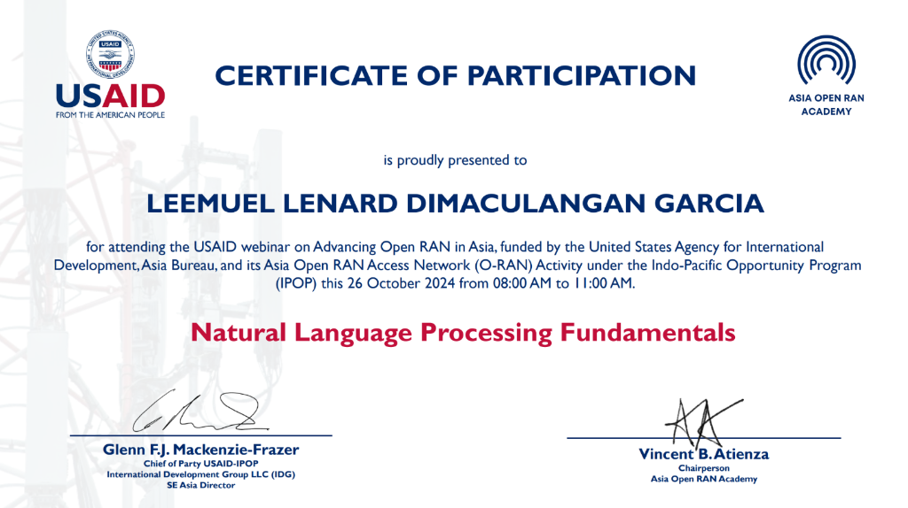
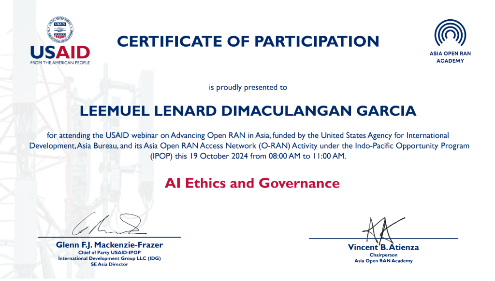
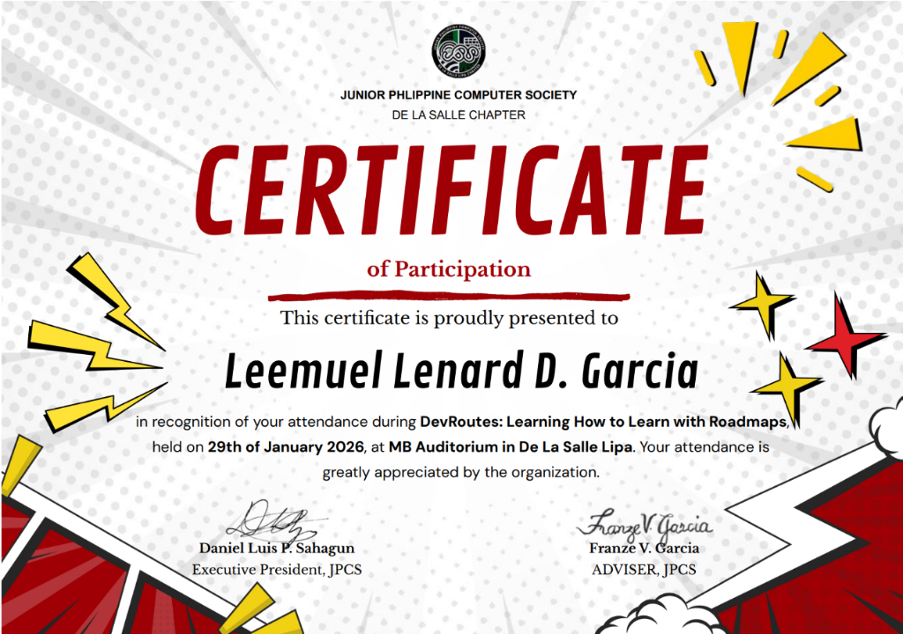
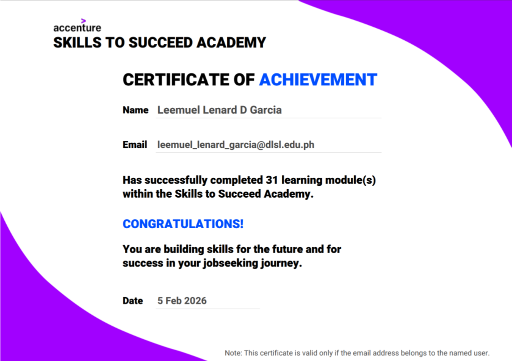

Bachelor of Science in Information Technology
Aspiring IT professional focused on networking, artificial intelligence, data analytics, system development, and continuous learning. Passionate about solving real-world problems through technology and innovation.
Driven by curiosity and a passion for innovation
I am an Information Technology student at De La Salle Lipa – College of Information Technology and Engineering, driven by a deep curiosity for how technology shapes the world. My academic journey has given me a solid foundation in AI, networking, cybersecurity, Python programming, system development, and data science.
I believe in the power of a growth mindset and continuous learning. In a field that evolves rapidly, staying adaptable and embracing new challenges is essential. I strive to balance technical expertise with soft skills—communication, critical thinking, and emotional intelligence—because I know that great technology is built by people who collaborate effectively.
My goal is to become a competent IT professional capable of adapting to evolving technologies, contributing meaningfully to teams, and leveraging innovation to solve real-world problems.
Exploring machine learning, NLP, and data-driven solutions
Building expertise in network infrastructure and cybersecurity
Writing clean, efficient code for analysis, automation, and building systems
Committed to lifelong learning and professional development
A growing toolkit for the modern IT landscape
HTML5 • CSS3 • Responsive Design
JavaScript • React.js • UI/UX
OSI/TCP-IP • Routing • Switching
Subnetting • ICMPv6 • Neighbor Discovery
Name Resolution • Dynamic Configuration
Ping • Tracert • Diagnostics
Variables • Functions • Packages
DataFrames • Arrays • Data Wrangling
Matplotlib • Charts • Simulations
Machine Learning • Ethics • Applications
Text Processing • Language Models • Chatbots
Analysis • Evaluation • Reasoning
Structured Thinking • Troubleshooting
Empathy • Self-awareness • Collaboration
Seminars, courses, and certifications that shaped my expertise
USAID Asia Open RAN Academy
USAID Asia Open RAN Academy
Accenture
De La Salle Lipa – JPCS Weeks
Cisco Networking Academy / DICT-ITU DTC Initiative
DataCamp
DataCamp
Cisco Networking Academy
Cisco Networking Academy
Click any certificate to view in full size









In-depth look at completed online courses and key takeaways
Emphasizes continuous learning beyond formal education. Develops a growth mindset — viewing intelligence and skills as abilities developed through effort, practice, and feedback.
Introduces systematic approaches to identifying, analyzing, and resolving everyday and complex problems. Uses structured methods like logic trees, hypotheses, and root-cause analysis.
Develops the ability to analyze information logically, question assumptions, and make reasoned judgments. Emphasizes objectivity, reflection, and evidence-based thinking.
Focuses on understanding, managing, and regulating emotions. Highlights emotional awareness, self-control, empathy, and the S.T.O.P.P. strategy for managing intense emotions.
Provides an overview of AI systems that create new content — text, images, code, audio, and video. Covers responsible and ethical use of AI technologies in academic and professional settings.
What? So What? Now What?
The idea that "your career is a journey; roadmaps help you navigate it" made the most impact. It emphasized that confusion and uncertainty are normal, but having a clear roadmap can provide direction even when the destination changes.
This means that I do not need to have everything figured out immediately. Understanding that careers are built step by step reduces pressure and encourages intentional growth. The information helps me see how learning new skills, choosing projects, and gaining experience all connect to long-term career goals in tech.
Moving forward, I will start mapping my own career roadmap by identifying my current skills and interests, then setting short-term milestones such as completing small projects or joining tech-related activities. I will also participate in challenges, build projects, and share my work to gain experience and clarity about which career path in tech best fits me.
Evaluating strengths, weaknesses, opportunities, and threats
Hands-on work applying theory to practice
A system designed to improve beneficiary verification, reduce duplicate registrations, and streamline compliance checking using QR technology and centralized records.
Configured enterprise-style network services including Active Directory, DNS, DHCP, Samba, and Linux web server integration in a hybrid Windows-Linux environment.
Created small Python programs using pandas, NumPy, and Matplotlib for data analysis, simulations, and visualization.
Looking back to move forward
Throughout my journey as an IT student, I've come to realize that continuous self-improvement is not just a choice—it's a necessity. Technology evolves at an unprecedented pace, and the only way to stay relevant is to embrace change with curiosity and determination.
Every seminar attended, every certification earned, and every project completed has reinforced a core belief: adapting to emerging technologies is the hallmark of a true IT professional. From networking fundamentals to artificial intelligence, each domain has taught me that learning never truly ends—it only transforms.
I've also learned that technical knowledge alone is not enough. Combining technical expertise with ethics, communication skills, and emotional intelligence creates a well-rounded professional who can lead, collaborate, and innovate responsibly.
Looking ahead, I am committed to pursuing further specialization in AI, networking, cybersecurity, system development, and data science. I envision myself contributing to teams that build secure, intelligent, and user-centered technology solutions—systems that make a meaningful difference in people's lives.
Let's connect and explore opportunities together
I'm always open to new opportunities, collaborations, and conversations about technology. Feel free to reach out through any of the platforms below.
A snapshot of my academic and professional progress so far.